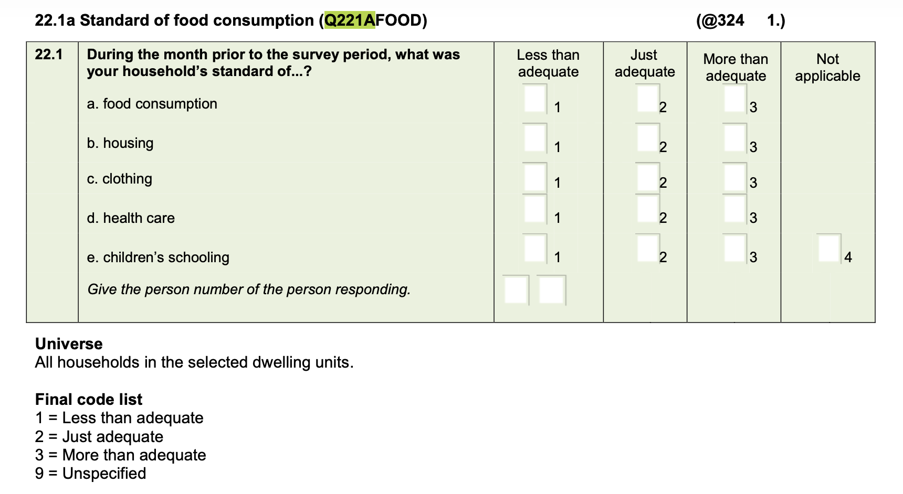

person_df <- read_dta('../Data/lcs/lcs-2014-2015-persons-final-v1.dta') |>
select(UQNO,
PERSONNO,
Q12SEX,
Q14AGE) |>
clean_names()
# cound number of children 5 or under
hh_child5_df <- person_df |>
group_by(uqno) |>
mutate(child5 = 1*(q14age<= 5)) |>
summarize(children_under5 = sum(child5),
.groups = 'drop')Merging, Tables and some Plots
EKT 813
References
- We are still working mostly with Wickham, Çetinkaya-Rundel, and Grolemund (2023)
- Each of the chapters is fairly easy reading
- This week, I will mostly look at chapters 9-11, 19
- Try to go through those, yes, even if you do not want to use R, there is some very good advice in it.
- We will also make use of
kableExtra, the following offers some examples
Packages
- The ones from before, most likely
kblinknitr(Xie 2014) andkableExtra(Zhu 2024) and can be used withskim-gt(Iannone et al. 2026) is also good for simple tables, can be combined withskimstartgazer(Hlavac 2022) is often easy to use, but requires numeric data (does not work with factors)
Additional references
janitor(Firke 2024) has some nice table and factor featuresforcats(Wickham 2023), which is part of tidyverse, also has some nice factor features that are useful for table buildingggplot2(Wickham 2016) for plots is part of thetidyverseggthemes(Arnold 2025) offers a bit more for plots.
Data
- Living Conditions Survey (Statistics South Africa 2017)
- Others?
Today’s objectives
- Join data
- Build simple tables
- Build basic plots
Joining
Merge concepts
- The commands
Read in person data
Food adequacy question
- Before reading in household information

Read in household data
household_df <- read_dta('../Data/lcs/lcs-2014-2015-households-v1.dta') |>
select(UQNO,
expenditure_inkind,
income_inkind,
province_code,
Q221AFOOD,
hhsize) |>
clean_names() |>
mutate(food_adeq = as_factor(q221afood))COICOP
Read in and create (food) expenditure data
total_df <- read_dta('../Data/lcs/lcs-2014-2015-total-v1.dta') |>
clean_names() |>
# I already checked to see the names to select
select(uqno,
secondary_group,
third_group,
valueannualized_adj) |>
mutate(sg = as.numeric(secondary_group),
tg = as_factor(third_group)) |>
# keeps only food consumption
filter(sg == 11) |>
droplevels()
food_exp_df <- total_df |>
group_by(uqno) |>
summarise(food_expend = sum(valueannualized_adj),
.groups = 'drop') Before merging
- Data dimensions
print(paste("Observations in household_df",
" = ", dim(household_df)[1]))#> [1] "Observations in household_df = 23380"print(paste("Observations in person_df",
" = ", dim(person_df)[1]))#> [1] "Observations in person_df = 88906"print(paste("Observations in hh_child5_df",
" = ", dim(hh_child5_df)[1]))#> [1] "Observations in hh_child5_df = 23380"print(paste("Observations in food_exp_df",
" = ", dim(food_exp_df)[1]))#> [1] "Observations in food_exp_df = 23094"#households.to.persons <- left_join(persons,households)Merging (households to persons)
- Want observations determined by number of persons
house_2_pers_df <-
left_join(person_df,household_df,
by = "uqno")
print(paste("Observations in house_2_pers_df",
" = ", dim(house_2_pers_df)[1]))#> [1] "Observations in house_2_pers_df = 88906"Merging (households to persons)
- Want observations determined by number of households
pers_2_house_wrong <-
right_join(person_df,household_df,
by = "uqno")
print(paste("Observations in pers_2_house_wrong",
" = ", dim(pers_2_house_wrong)[1]))#> [1] "Observations in pers_2_house_wrong = 88906"- What is wrong here?
- The
leftis not properly limited
Again merging households to persons
- Choose a person in the household
- Like the head of the household?
# Note the change in structure, when piped?
pers_2_house_df <- person_df |>
filter(personno == 1) |>
#person_df is already there
right_join(household_df,
by = "uqno")
print(paste("Observations in pers_2_house_df",
" = ", dim(pers_2_house_df)[1]))#> [1] "Observations in pers_2_house_df = 23380"Add in the food expenditure
pers_house_food_df <- pers_2_house_df |>
right_join(food_exp_df,
by = "uqno")
print(paste("Observations in pers_house_food_df",
" = ", dim(pers_house_food_df)[1]))#> [1] "Observations in pers_house_food_df = 23094"- Hmm, is this what I want?
A slightly different merge?
pers_house_food_dfl <- pers_2_house_df |>
left_join(food_exp_df,
by = "uqno")- Or, is this the one I want?
- What is the difference?
- How does one decide?
Tables
Some thoughts
- I have shown many simple tables
- What is a table?
- It is a collection of numbers
- Similar to a data.frame or tibble
- Likely has row and col names
- I often use
kbl()andkableExtra - Often, I build the tibble with what I want
- But, there are some useful packages
Using stargazer (code fails)
# using "left" data
# Piping all the way through
gaz_table <- pers_house_food_dfl |>
select(q14age,
expenditure_inkind,
income_inkind,
food_expend)
stargazer(gaz_table,
type = "html",
note="Simple descriptives of continuous data")Stargazer table (fails)
| Statistic | N | Mean | St. Dev. | Min | Max |
| Simple descriptives of continuous data |
- Why the fail?
stargazerhas a very specific input specification..stargazerhas many options that yield nice tables- This is a default descriptive stats table, not too exciting looking, but all there
Stargazer that works? (code)
# using "left" data
# Piping all the way through
gaz_table <- pers_house_food_dfl |>
select(q14age,
expenditure_inkind,
income_inkind,
food_expend) |>
as.data.frame()
stargazer(gaz_table,
type = "html",
note="Simple descriptives of continuous data")Stargazer that works? (results)
| Statistic | N | Mean | St. Dev. | Min | Max |
| q14age | 23,380 | 49.217 | 16.113 | 13 | 103 |
| expenditure_inkind | 23,380 | 89,080.810 | 137,486.300 | 1,445.533 | 2,637,938.000 |
| income_inkind | 23,380 | 116,166.100 | 196,563.400 | 0.000 | 7,943,237.000 |
| food_expend | 23,094 | 12,112.650 | 11,281.050 | 25.905 | 271,726.900 |
| Simple descriptives of continuous data |
That table is really too big
- There are .css options to change the table size or make it scroll
- If looking at this in normal html, it might look ok?
- Maybe a reason to just build what is wanted?
- Do we need all this detail?
- More generally, to make better use of stargazer
Choose less information (in stargazer)
stargazer(gaz_table,
summary.stat = c("n","mean","sd"),
type = "html",
note="Simple descriptives of continuous data")| Statistic | N | Mean | St. Dev. |
| q14age | 23,380 | 49.217 | 16.113 |
| expenditure_inkind | 23,380 | 89,080.810 | 137,486.300 |
| income_inkind | 23,380 | 116,166.100 | 196,563.400 |
| food_expend | 23,094 | 12,112.650 | 11,281.050 |
| Simple descriptives of continuous data |
Use gt()
- Names can be made better via select
- Pipe the data through a
formattype command
gaz_table |>
skim() |>
select(variable = skim_variable,
missing = n_missing,
mean = numeric.mean,
sd = numeric.sd,
median = numeric.p50) |>
gt(caption = "Simple descriptive statistics for numeric data") |>
fmt_number(decimals = 2)| variable | missing | mean | sd | median |
|---|---|---|---|---|
| q14age | 0.00 | 49.22 | 16.11 | 49.00 |
| expenditure_inkind | 0.00 | 89,080.81 | 137,486.27 | 43,218.57 |
| income_inkind | 0.00 | 116,166.12 | 196,563.37 | 48,855.42 |
| food_expend | 286.00 | 12,112.65 | 11,281.04 | 9,168.36 |
Use kbl() (code)
- We can skim, as above, or create our own information; skim is probably easier
- The styling features do no show up on my slides
- Probably, we want to change the rownames, too
gaz_table |>
skim() |>
select(variable = skim_variable,
missing = n_missing,
mean = numeric.mean,
sd = numeric.sd,
median = numeric.p50) |>
kbl(caption = "Simple descriptive statistics for numeric data",
digits = 2) |>
kable_styling(
bootstrap_options = c("striped", "hover", "condensed", "responsive")
)Use kbl() results
| variable | missing | mean | sd | median |
|---|---|---|---|---|
| q14age | 0 | 49.22 | 16.11 | 49.00 |
| expenditure_inkind | 0 | 89080.81 | 137486.27 | 43218.57 |
| income_inkind | 0 | 116166.12 | 196563.37 | 48855.42 |
| food_expend | 286 | 12112.65 | 11281.04 | 9168.36 |
What to do about factors?
- Create numeric versions of these
- Means will be proportions
- But, dummies must be correctly defined
- Create proportions more directly
- Should numeric and factor be combined?
- They often are in economics tables
- Not obvious they should be
- Different types of data
Create some dummies
dstats_df <- pers_house_food_dfl |>
# Just keeping the dummies, we have already seen the rest of the numerics...
transmute(male = 1*(q12sex==1),
female = 1*(q12sex==2),
wc = 1*(province_code == 1),
ec = 1*(province_code == 2),
nc = 1*(province_code == 3),
fs = 1*(province_code == 4),
kzn = 1*(province_code == 5),
nw = 1*(province_code == 6),
gp = 1*(province_code == 7),
mp = 1*(province_code == 8),
lp = 1*(province_code == 9),
lessthan = 1*(food_adeq == "Less than adequate"),
adequate = 1*(food_adeq == "Just adequate"),
morethan = 1*(food_adeq == "More than adequate")) Print the table with kbl or gt (code)
dstats_df |>
skim() |>
select(variable = skim_variable,
missing = n_missing,
mean = numeric.mean,
sd = numeric.sd,
median = numeric.p50) |>
kbl(caption = "Simple descriptive statistics for dummy data",
digits = 2) |>
kable_styling(
bootstrap_options = c("striped", "hover", "condensed", "responsive")
)Print the table with kbl or gt (results)
| variable | missing | mean | sd | median |
|---|---|---|---|---|
| male | 0 | 0.55 | 0.50 | 1 |
| female | 0 | 0.45 | 0.50 | 0 |
| wc | 0 | 0.12 | 0.32 | 0 |
| ec | 0 | 0.13 | 0.33 | 0 |
| nc | 0 | 0.06 | 0.23 | 0 |
| fs | 0 | 0.09 | 0.29 | 0 |
| kzn | 0 | 0.16 | 0.36 | 0 |
| nw | 0 | 0.09 | 0.28 | 0 |
| gp | 0 | 0.14 | 0.35 | 0 |
| mp | 0 | 0.10 | 0.30 | 0 |
| lp | 0 | 0.12 | 0.33 | 0 |
| lessthan | 0 | 0.25 | 0.43 | 0 |
| adequate | 0 | 0.66 | 0.48 | 1 |
| morethan | 0 | 0.08 | 0.27 | 0 |
Some final thoughts
- These tables are too big to fit the slides
- They should be fine in the full html version
- One probably needs to think about medians a bit?
- Also, what would one do, if the table were to be split by province or sex?
- One could create separate skims
- The skims could be tabled and grouped by province or sex
- Probably, one would find it easier to build the data
Plots
Thinking about plots
- Plotting in base R is actually pretty easy, and I do it fairly often
- R thinks in ‘layers’
- Draw the plot (R chooses based on type of data)
- Add additional ones, if needed
- Label the figure
- Create a legend
ggplotthinks the same way- Sometimes easier to use
- Sometimes less so (in my view)
- Obviously, there are plenty other plotting packages
The ggplot command
- It is part of
tidvyerse, so designed to work like piping - However, plot layers are ADDED
- Must have an
aesor aesthetics component - Must have a plot type
- AND, the data needs to match the plot type
A simple boxplot
pers_house_food_dfl |>
select(food_expend, hhsize, food_adeq) |>
mutate(mfood_pc = (food_expend/12)/hhsize) |>
ggplot(aes(x=food_adeq,y=mfood_pc)) +
geom_boxplot()#> Warning: Removed 286 rows containing non-finite outside the scale range
#> (`stat_boxplot()`).
Slightly prettier (code)
pers_house_food_dfl |>
select(food_expend, hhsize, food_adeq) |>
mutate(mfood_pc = (food_expend/12)/hhsize) |>
ggplot(aes(x=food_adeq,y=mfood_pc)) +
geom_boxplot() +
labs(
x = "Household food adequacy response",
y = "Monthly food expenditure per capita",
title = "Boxplot of monthly food expenditure per capita across reported household food adequacy",
caption = "Source: LCS 2014-15")Slightly prettier
#> Warning: Removed 286 rows containing non-finite outside the scale range
#> (`stat_boxplot()`).
- We might want to drop the unspecified value
Revise the data
plot_df <- pers_house_food_dfl |>
select(food_expend,
expenditure_inkind,
hhsize,
q12sex) |>
# We lose observations here, i think
mutate(ln_mfoodpc = log((food_expend/12)/hhsize),
ln_mpc = log(expenditure_inkind/12),
male = as_factor(q12sex)) Scatterplot and nonlinear fit
plot_df |>
ggplot(aes(x=ln_mpc,
y=ln_mfoodpc)) +
geom_point() +
geom_smooth() +
labs(x = "Log per capita monthly expenditure",
y = "Log per capita monthly food expenditure",
title = "Relationship between montly total and food expenditure in logs",
caption = "Source: LCS 2014-15")#> `geom_smooth()` using method = 'gam' and formula = 'y ~ s(x, bs = "cs")'#> Warning: Removed 286 rows containing non-finite outside the scale range
#> (`stat_smooth()`).#> Warning: Removed 286 rows containing missing values or values outside the scale range
#> (`geom_point()`).
Splitting by sex of household head (code)
plot_df |>
drop_na() |>
ggplot(aes(x=ln_mpc,
y=ln_mfoodpc,
color = male)) +
geom_point() +
geom_smooth() +
labs(x = "Log per capita monthly expenditure",
y = "Log per capita monthly food expenditure",
title = "Relationship between montly total and food expenditure in logs across the sex of household head",
caption = "Source: LCS 2014-15")Splitting by sex of household head (plot)
#> `geom_smooth()` using method = 'gam' and formula = 'y ~ s(x, bs = "cs")'
- The legend has a stupid name
- Also, I do not really like the background
Changing the background (code)
plot_df |>
drop_na() |>
ggplot(aes(x=ln_mpc,
y=ln_mfoodpc,
color = male)) +
geom_point() +
geom_smooth() +
labs(x = "Log per capita monthly expenditure",
y = "Log per capita monthly food expenditure",
title = "Relationship between montly total and food expenditure in logs across the sex of household head",
caption = "Source: LCS 2014-15") +
theme_bw()Changing the background (plot)
#> `geom_smooth()` using method = 'gam' and formula = 'y ~ s(x, bs = "cs")'
- There are many themes
Fixing that legend (code)
- Also, changing the theme, again
plot_df |>
drop_na() |>
ggplot(aes(x=ln_mpc,
y=ln_mfoodpc,
color = male)) +
geom_point() +
geom_smooth() +
labs(x = "Log per capita monthly expenditure",
y = "Log per capita monthly food expenditure",
title = "Relationship between montly total and food expenditure in logs across the sex of household head",
caption = "Source: LCS 2014-15",
color = "Sex") +
theme_solarized()Changing the background (plot)
#> `geom_smooth()` using method = 'gam' and formula = 'y ~ s(x, bs = "cs")'
A Sidestep
Some different packages
scholartmwordcloudRColorBrewer
Getting publications
# Google Scholar ID
id <- "aQuqTmcAAAAJ"
# Fetch all publications
publications <- get_publications(id)
# Extract the titles
titles <- publications$title
# Process and clean the text data for analysis
docs <- Corpus(VectorSource(titles))
docs <- tm_map(docs,
content_transformer(tolower))#> Warning in tm_map.SimpleCorpus(docs, content_transformer(tolower)):
#> transformation drops documentsdocs <- tm_map(docs,
removePunctuation)#> Warning in tm_map.SimpleCorpus(docs, removePunctuation): transformation drops
#> documentsdocs <- tm_map(docs,
removeWords,
stopwords("english"))#> Warning in tm_map.SimpleCorpus(docs, removeWords, stopwords("english")):
#> transformation drops documentsDoing some string cleaning
# Optional: Remove specific common terms from your field
docs <- tm_map(docs,
removeWords,
c("south", "africa", "african",
"ethiopia","ethiopian"))#> Warning in tm_map.SimpleCorpus(docs, removeWords, c("south", "africa",
#> "african", : transformation drops documents# Create a term-document matrix and generate the plot
dtm <- TermDocumentMatrix(docs)
matrix <- as.matrix(dtm)
df <- data.frame(word = names(sort(rowSums(matrix), decreasing = TRUE)),
freq = sort(rowSums(matrix), decreasing = TRUE))Topics in my publications
wordcloud(words = df$word, freq = df$freq,
max.words = 50,
colors = brewer.pal(8, "Spectral"))
References
Arnold, Jeffrey B. 2025. Ggthemes: Extra Themes, Scales and Geoms for ’Ggplot2’. https://doi.org/10.32614/CRAN.package.ggthemes.
Firke, Sam. 2024. Janitor: Simple Tools for Examining and Cleaning Dirty Data. https://doi.org/10.32614/CRAN.package.janitor.
Hlavac, Marek. 2022. Stargazer: Well-Formatted Regression and Summary Statistics Tables. Bratislava, Slovakia: Social Policy Institute. https://CRAN.R-project.org/package=stargazer.
Iannone, Richard, Joe Cheng, Barret Schloerke, Shannon Haughton, Ellis Hughes, Alexandra Lauer, Romain François, JooYoung Seo, Ken Brevoort, and Olivier Roy. 2026. Gt: Easily Create Presentation-Ready Display Tables. https://doi.org/10.32614/CRAN.package.gt.
Statistics South Africa. 2017. “Living Conditions Survey 2014–2015, South Africa.” DataFirst, University of Cape Town; Statistics South Africa. https://microdata.worldbank.org/index.php/catalog/2882.
Wickham, Hadley. 2016. Ggplot2: Elegant Graphics for Data Analysis. Springer-Verlag New York. https://ggplot2.tidyverse.org.
———. 2023. Forcats: Tools for Working with Categorical Variables (Factors). https://doi.org/10.32614/CRAN.package.forcats.
Wickham, Hadley, Mine Çetinkaya-Rundel, and Garrett Grolemund. 2023. R for Data Science: Import, Tidy, Transform, Visualize, and Model Data. 2nd ed. Sebastopol, CA, USA: O’Reilly Media. https://r4ds.hadley.nz/.
Xie, Yihui. 2014. “Knitr: A Comprehensive Tool for Reproducible Research in R.” In Implementing Reproducible Computational Research, edited by Victoria Stodden, Friedrich Leisch, and Roger D. Peng. Chapman; Hall/CRC.
Zhu, Hao. 2024. kableExtra: Construct Complex Table with ’Kable’ and Pipe Syntax. https://doi.org/10.32614/CRAN.package.kableExtra.